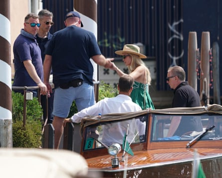
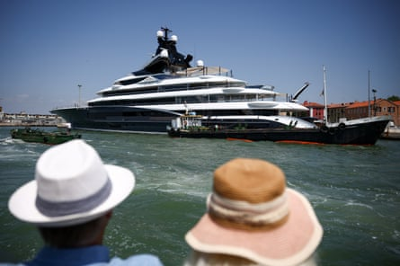
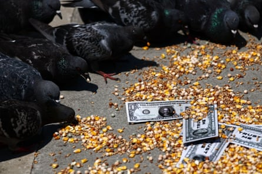
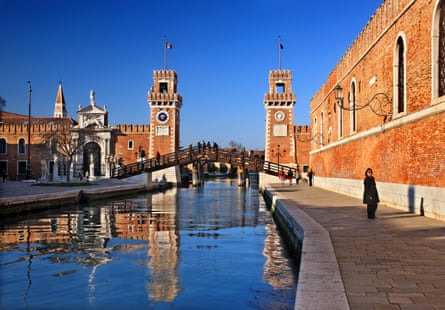
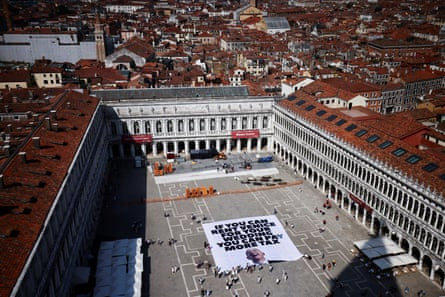
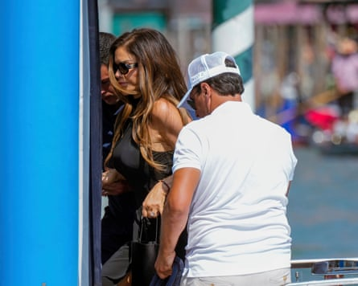

The billionaire Amazon founder, Jeff Bezos , and the former TV journalist Lauren Sánchez have arrived in Venice as they prepare to tie the knot in a lavish three-day celebration that has divided the lagoon city.
Scores of celebrities and other members of the world’s super-rich will also join the pair in Italy , arriving on superyachts and private jets.
Bezos, the world’s fourth-richest person, and Sánchez were seen stepping off a water taxi on Wednesday as they entered the exclusive Aman Venice hotel on the Grand Canal, where many of the celebrities will stay.
More than 90 private jets are expected to land in Venice before the celebrations officially begin on Thursday, bringing in guests for an event that some have called the “wedding of the century” and is rumoured to involve everything from pyjama parties to elegant dinners.
Ivanka Trump arrives at the St Regis hotel.Photograph: Andrea Merola/EPA
Among the first guests to arrive were Donald Trump’s daughter Ivanka, her husband, Jared Kushner, and their children. The family are staying at the St Regis, close to St Mark’s Square, one of a host of five-star hotels booked by the 200 or so wedding guests.
According to reports in the local press, some of the more low-profile invitees arrived even earlier. Arience, a 60-metre yacht belonging to the American fund manager and Amazon investor Bill Miller, moored by St Mark’s earlier this week.
Kismet, a superyacht owned by Shahid Khan, a Pakistani-American billionaire and the owner of Fulham FC, is also moored in the city.
Kismet, a superyacht owned by Shahid Khan, the owner of Fulham FC, is moored in Venice.Photograph: Guglielmo Mangiapane/Reuters
Venice authorities are rolling out a huge security operation, including at Marco Polo airport, as concerns rise over geopolitical instability and threats by activists from the No Space for Bezos campaign group to clog the canals with inflatable crocodiles in order to impede guests.
Other VIPs believed to be on the guest list include Kim Kardashian, Oprah Winfrey, Eva Longoria and Orlando Bloom, and possibly Bill Gates, Mick Jagger and Elton John.
If the sound of wheeled suitcases being dragged along Venice’s narrow lanes is among the bugbears of the city’s ever dwindling band of residents, local newspapers have warned them to be prepared for the stacks of luggage Bezos’s guests will need to bring containing the many outfits required for what they say will be “a wedding in three acts”.
Fake dollar bills with Jeff Bezos’s face on them in St Mark’s Square.Photograph: Yara Nardi/Reuters
Details of the celebrations are strictly under wraps and all staff involved have been warned not to even mention the nuptials when speaking on the phone.
However, it is believed the couple will exchange vows on Friday in San Giorgio Maggiore, a 16th-century basilica designed by the Renaissance architect Andrea Palladio and located on the Venetian island of the same name. The guests will get to admire the basilica’s artistic gems, including Tintoretto’s The Last Supper, and enjoy a concert in the tiny island’s amphitheatre as well as amble through its kilometre-long maze.
The main wedding reception is expected to be held on Saturday in the Arsenale, a historic complex of shipyards surrounded by fortified walls.Photograph: Hercules Milas/Alamy
The main wedding reception is expected to be held on Saturday in the Arsenale, a historic complex of shipyards surrounded by fortified walls. The big party was originally supposed to take place in a 16th-century building in the centre of the city but was switched due to security concerns.
The wedding, said to be costing €40m-€48m (£34m-£41m), is the most high-profile to take place in Venice since George and Amal Clooney were married in the city in 2014. But while the Clooneys were welcomed, the Bezos nuptials have been far more contentious, with posters featuring Bezos’s head on a rocket blasting into space – in reference to his Blue Origin space tourism venture – pasted on walls across the city.
A large anti-Bezos banner graces St Mark’s Square placed by the activist groups Greenpeace Italy and Everyone Hates Elon.Photograph: Yara Nardi/Reuters
Protesters say the event risks turning the world heritage site, which has long suffered from the effects of excessive tourism, into a playground for the rich.
Greenpeace Italia and the British activist group Everyone Hates Elon have joined the protests, unfurling a huge banner in St Mark’s Square on Monday with a picture of Bezos laughing and a sign reading: “If you can rent Venice for your wedding you can pay more tax.”
A similar banner was pinned to a huge crane on Tuesday night in front of Hotel Danieli, where some of the guests are staying, as part of a protest organised by Extinction Rebellion activists dressed as Robin Hood.
“If a person can buy Venice for their marriage, then it’s a person who has an inconceivable amount of wealth, and who could therefore pay even more in tax,” said Jorge Molina, a spokesperson for the group. “We ask that the rich are taxed more to give hope to the planet.”
Lauren Sánchez arrives by boat to a hotel in Venice.Photograph: Luca Bruno/AP
Sitting on a bench close to St Mark’s Square, Demetrio, who was born in Venice, said he was more annoyed with the protesters than he was with Bezos. “I missed the water taxi home last night because the stop opposite the Danieli hotel was blocked off,” he said. “We have always had rich people here, what about the Doges? Rich people should be able to spend their money how they want. The protesters are just envious that they don’t have that kind of wealth.”
A local artist known as Picchio said: “I don’t really know who this Bezos fellow is, but what is wrong with him getting married here? It’s a beautiful city to get married in – I got married here too.”
Venice’s millionaire mayor, Luigi Brugnaro, has said the wedding will bring great riches to the city and has condemned the protesters as “shameful”. Simone Venturini, the city’s tourism councillor, said the objections voiced by “a few dozen professional protesters” were driven by a desire for media attention. “Each year we host hundreds of events and celebrations, many of which have an even greater impact on the city,” he added.
Bezos will make sizeable charity donations, including €1m towards a project that studies Venice’s lagoon system, according to reports in the Corriere della Sera newspaper and the news agency Ansa.